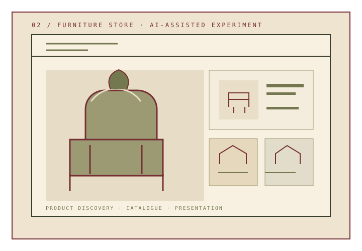
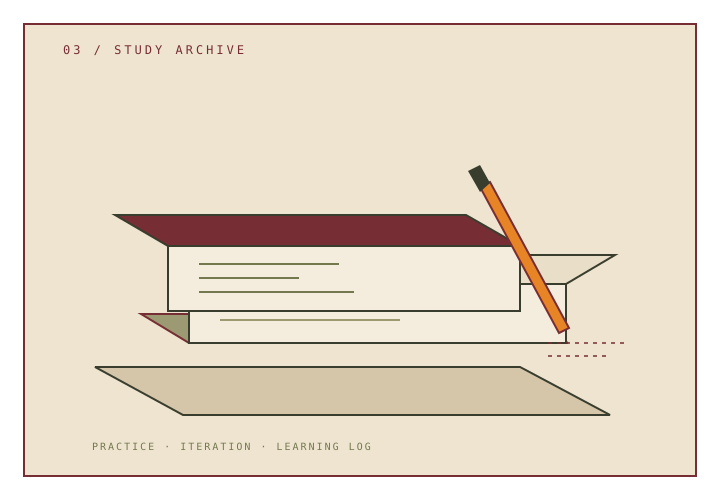
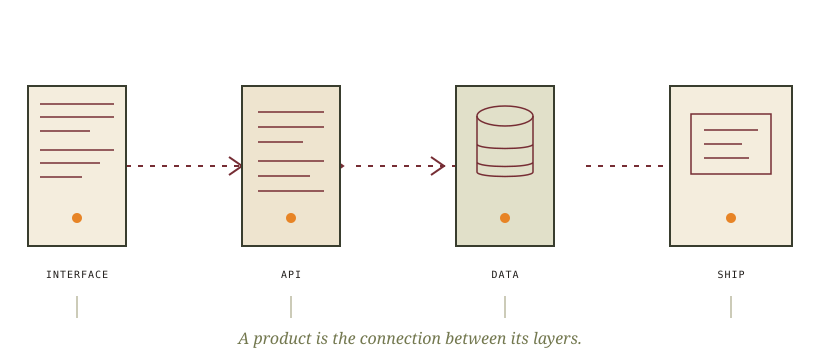

ILLUSTRATED EDITION · 2026
ILLUSTRATED EDITION · 2026
THE DIGITAL ISSUE№ 01 · 2026
ANASTASIA / NESTLIR
От первого
интерфейса
до системы.
Fullstack-разработка на стыке интерфейсов, API, данных и внимательного продуктового мышления.
РОЛЬFullstack / Frontend Developer
ФОКУСUI · API · DATA · SHIP
В этом выпуске
Tools of the trade
Инструменты, с которыми собираю продукт целиком. Без шкал «владения» — только технологии и области практики.
01
Frontend
интерфейсы
- React
- TypeScript
- Next.js
- Vite
- HTML
- CSS
02
Backend
сервисы и API
- Node.js
- Express
- NestJS
- REST API
03
Данные и инфраструктура
хранение и выкладка
- PostgreSQL
- MongoDB
- Docker
- Git
04
Качество интерфейса
проверка и доступность
- Responsive UI
- Accessibility
- Playwright
- Forms & States
Стек отражает инструменты из проектов и рабочего фокуса; уровни и проценты намеренно не приписываю.
DataVac
Информационный продукт · модуль вакцинации
КОНТЕКСТ
Командный информационный продукт. В этой работе я участвовала в frontend-задачах внутри модуля вакцинации.
ЧТО МОЖНО ПОСМОТРЕТЬ
- Реализацию интерфейсной части в пределах моей зоны ответственности.
- Работу с данными и состояниями конкретного модуля.
- Код командного frontend-репозитория.
- Frontend
- React
- TypeScript
- API
Не приписываю себе остальные части продукта или работу команды целиком.
Furniture
Store
Эксперимент с продуктовым интерфейсом

Иллюстрация: каталог и карточка товара
ФОРМАТ РАБОТЫ
AI-assisted эксперимент: я задала требования, направление и структуру продукта, а ИИ использовался в процессе реализации.
ФОКУС
- Product Brief
- Responsive UI
- Catalogue
- AI-assisted
Это самостоятельный эксперимент, не клиентский проект и не заявка на командную коммерческую разработку.
Открыть репозиторий↗
Practice makes craft.
Учебные задания — отдельная категория. Они показывают практику с инструментами и паттернами, а не коммерческий опыт.

- 01Web LarekTypeScript · E-commerce ↗
- 02Stellar BurgerReact · Redux ↗
- 03MestoReact · Forms ↗
- 04Blog CustomizerReact · TypeScript ↗
- 05Оно тебе надоHTML · CSS ↗
From interface
to delivery.
Мне важно понимать не только экран, но и путь данных, ограничения API, ошибки и то, как продукт ведёт себя после релиза.

01Разобраться
Контекст, пользователь, ограничения, данные.
02Спроектировать
Сценарии, состояния, структуру интерфейса и API.
03Проверить
Клавиатуру, маленький экран, ошибки и крайние случаи.
04Доставить
Понятная сборка, репозиторий, документация, выкладка.